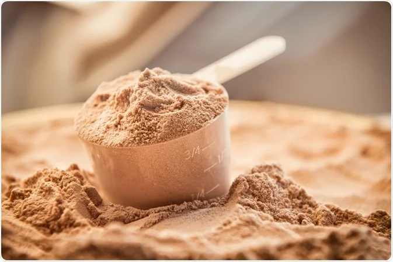

Аминокиселини
Аминокиселините са градивните единици на протеините. Някои от тях организмът не може да произведе сам, затова трябва да се набавят чрез храната или добавки.

Видове аминокиселини
- EAA (Essential Amino Acids) – есенциални, задължителни за прием.
- BCAA (Branched-Chain Amino Acids) – левцин, изолевцин и валин.
- Non-Essential – организмът ги синтезира сам (глутамин, аргинин).
Ползи
- Подпомагат възстановяването и мускулния растеж.
- Намаляват умората по време на тренировка.
- Подобряват синтеза на протеин след натоварване.

Кога да ги приемаме
Аминокиселините могат да се приемат преди, по време или след тренировка. Добавките с EAA или BCAA се усвояват бързо и доставят аминокиселини директно в кръвта, което подпомага възстановяването и намалява катаболизма. Въпреки това, при достатъчен прием на протеин, ако човек няма съпътстващи заболявания в повече случаи аминокиселини не са нужни